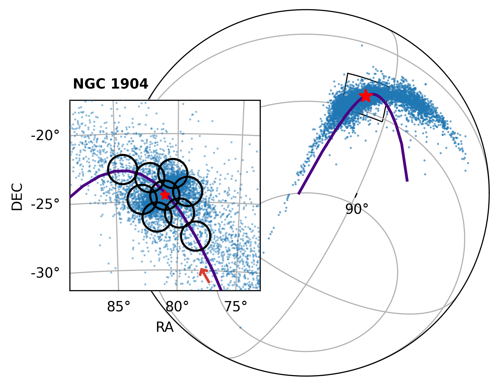

Overview of my scientific interests
Software development for the Euclid Pipeline
I am part of the team of developers working on the Near-Infrared (NIR) pipeline for processing NIR images that the Euclid telescope captures and that will be made available to the public for the up-coming data releases. I am interested in making the data more suitable for low-surface brightness science and in the reduction of persistence effects that affect the NIR images. Below are some images that were part of the Euclid Early Release Observations (ERO).
Cosmic filament tracing
My main research interest lies in the domain of the Large-Scale Structure or the Cosmic Web. My main goal is to trace cosmic filaments within cosmological simulations and in wide survey observations such as 2MASS, DESI, or Euclid in the future, as well as to map the dynamics and flow of matter surrounding these filaments. Mapping this flow increases our knowledge of how the Cosmic Web has come to form and how the properties of the galaxies that inhabit it depend on their cosmic environments. The figure below shows a snapshot of the Large-Scale Structure produced using the FLAMINGO simulations.
Characterization of Milky Way stellar streams
I am also interested in looking at the tidal debris of past mergers with the Milky Way which mostly manifest as elongated co-moving distributions of stars known as stellar streams. Finding and characterizing the morphology of these streams provides critical information about our galaxy and its formation history. Below is a figure from Awad et al. (2024) where we confirmed two overdensities in the proper motion space of a stellar stream named Jhelum and used the stars within these two overdensities to provide further information about the possible origin of this stream.
 Part of this line of work is exploring the surroundings of globular clusters to look for signatures of their tidal disruption by the Milky Way's potential. On the left is one example of this work published in Awad et al. (2025) where we looked for the tidal tails of the globular clusters NGC 1261 and NGC 1904 as well as star members that are mis-aligned with the general direction of the orbit of the two clusters. This work was in close collaboration with the Southern Stellar Stream Spectroscopic Survey (S5).
Credits: Figure is extracted from Awad et al. (2025).
Machine Learning algorithm development
The majority of the work mentioned above has been done using Machine Learning techniques that were developed by my colleagues, which we grouped together to form a toolbox of 5 algorithms designed for the extraction and analysis of filamentary structure within astrophysical settings. The toolbox is termed 1-DREAM and relies on concepts from swarm intelligence, evolutionary computation, manifold learning, and probabilistic modelling all combined in a coherent workframe. Below is an figure from Awad et al. (2023) showing the application of 1-DREAM on a subset from a cosmological simulation for the extraction and analysis of a large cosmic filament.